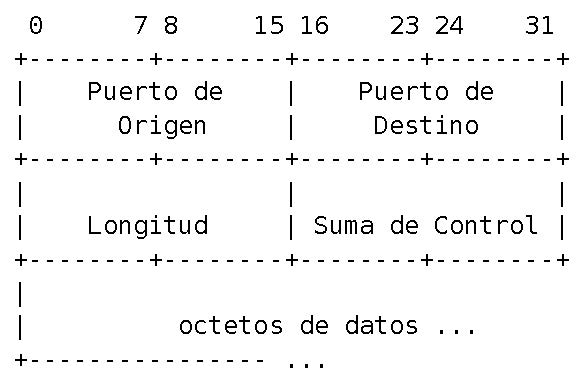
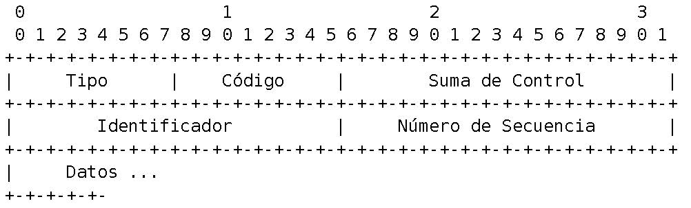

REDES DE COMUNICACIONES I
Práctica 4, sesiones 9/10/11: Tráfico sintético
Objetivos de la práctica
- Emular el funcionamiento genérico de la pila de protocolos de red para transmisión.
- Comprender la forma en que se encamina un paquete en una LAN y entre LANs distintas.
- Estudiar protocolos desde la capa de enlace a la de transporte.
- Conocer mecanismos de inyección de tráfico a la red, diferentes a la API de sockets que se trabajará en el siguiente semestre.
Introducción
En esta cuarta práctica emularemos el trabajo que la pila de red hace durante el proceso de transmisión de datos.
Para ello, consideraremos dos escenarios diferentes:
- En primer lugar, proponemos un escenario en el que una aplicación desea mandar datos a otro equipo. Este equipo abriría un socket
de comunicaciones, definido típicamente y dependiendo del tipo (por
ejemplo, TCP o UDP) por los puertos y direcciones IP (bien solo los
destino u origen/destino). De este modo, una aplicación enviaría datos
copiándolos en un socket, que es el elemento que permite que
los datos desciendan por la pila de protocolos de envío elegida y sean
transmitidos. Una vez recibidos en el receptor, se recorre la pila en
sentido contrario dejándolos en el nivel adecuado según la configuración
del socket. En esta práctica enviaremos datos del nivel de aplicación mediante un paquete Ethernet|IP|UDP a equipos tanto de la misma red local como externos a las redes locales.
- En segundo lugar, implementaremos de forma simple el envío de paquetes de echo (usados por la aplicación ping).
Estos paquetes siguen el protocolo ICMP, que se construye sobre IP y
sirve como protocolo de control, notificación y señalización para el
propio IP. Algunos ejemplos de uso de ICMP son el ping (que básicamente consiste en una solicitud de respuesta), alertas de TTL expirados (usado en traceroute) o de direcciones/puertos no disponibles.
Mediante
este ejercicio de generación de tráfico sintético se podrá entender con
detalle el funcionamiento de la pila de red, aunque en general la
inyección de tráfico por parte del usuario resulta útil para otras
cuestiones, como por ejemplo para testear una red en condiciones
controlables.
Para realizar la práctica se necesitará:
- Conocer la cabeceras IP, UDP e ICMP.
- Comprender la interacción entre un protocolo de nivel de red y uno de nivel de enlace. Esto es, ya se debe conocer como se direcciona el tráfico según dos equipos puedan comunicarse físicamente (son adyacentes) o si por el contrario se requiere de la colaboración de un router (nivel 3). En concreto en los laboratorios trabajaremos con tarjetas de red que presentan interfaces Ethernet.
- Conocer la fragmentación IP de datagramas, tal y como se ha visto en teoría, según las limitaciones de envío del nivel inferior. En nuestro caso, el tamaño máximo vendrá dado por la MTU Ethernet.
Finalmente, en esta práctica utilizaremos de nuevo la biblioteca libpcap para escribir en un archivo el tráfico formado por el usuario que será luego inyectado en la red. Así, el empleo de esta funcionalidad de libpcap permitirá comprobar la formación correcta del tráfico sintético.
Conocimiento necesarios
Cabecera IP
Los campos de IP se han visto en teoría así como el proceso de fragmentación IP:
En cuanto al checksum (o Suma de Control de Cabecera o suma de comprobación), para su cálculo se debe primero construir la cabecera IP completa asumiendo que el propio campo checksum está a cero. Despues, se aplica la función de checksum(·), y se sustituye el campo correspondiente con el valor calculado. Este valor se obtiene como el complemento a uno de la suma de los bytes implicados de dos en dos (recuerde que en el caso IP la suma de comprobación es solo sobre la cabecera). Se facilita una función que ya implementa este mecanismo: calcularChecksum(·) en practica4.c.
Wireshark por defecto no suele comprobar el checksum, por lo que debe habilitar esta comprobación para comprobar que se forma el paquete correctamente. En concreto, en la versión de Wireshark instalada en la máquina virtual del laboratorio se puede cambiar en Edit --> Preferences --> Protocols --> IPv4, y allí sería la cuarta opción.
Respecto a la fragmentación IP, puede referirse al libro o ejercicios hechos en teoría (o para comprobaciones rápidas al propio Wireshark).
Cabecera UDP
La cabecera UDP es de la siguiente forma:
donde en primer lugar tenemos los puertos origen y destino. En una comunicación típica, el puerto destino es definido por la aplicación (por ejemplo en el caso P2P el servidor de peers o el puerto/s que cada cliente P2P abre para ofrecer contenidos) o es bien conocido (servidor web=80, DNS=53). En cambio el puerto origen debe ser cualquiera válido que no esté ya en uso (típicamente aleatorio).
El campo Longitud hace referencia a todo el segmento (mensaje + cabecera UDP). El checksum de UDP no solo se calcula sobre la cabecera, como en el caso de IP, ni como intuitivamente debería hacerse (mensaje+cabecera UDP, es decir, sobre todo el segmento), sino que se extiende hacia el protocolo inferior por cuestiones poco justificables en términos académicos. Por simplicidad, no vamos a implementar el ckecksum UDP, así que debe ser dejado a 0.
ICMP
El protocolo ICMP (Internet Control Message Protocol, RFC 792) se puede considerar que forma parte de la capa IP. Sus mensajes son transmitidos sobre datagramas IP, como si de una capa superior se tratase pero su uso, como su nombre indica, corresponde a mensajes especiales de la propia capa de red (por tanto las terminología usada como referencia no encaja perfectamente para este protocolo).
Fundamentalmente es usado para avisar de condiciones de error, del tipo “no se encuentra ruta al host” o “se necesita fragmentar el datagrama habiéndose solicitado la no-fragmentación”. También sirve para comprobar la actividad de otro host (mensajes de petición y respuesta de echo), solicitar o anunciar routers, solicitar máscaras de red (RFC 950), etc.
De entre todos los tipos de mensaje ICMP existentes, nos limitaremos en esta práctica a la generación de mensajes de tipo echo request, que es lo mismo que Tipo = 8, y Codigo = 0, que se usa para hacer pings entre equipos.
El formato de un mensaje de ICMP echo request/reply es el siguiente:

El campo identificador se usa como identificador de proceso: por ejemplo, si hay varias instancias del programa ping corriendo en la misma máquina. En términos de esta práctica no aplicará más allá de asignar un identificador válido.
El número de secuencia permite asociar respuestas con solicitudes. Suele comenzar por cero y se incrementa cada vez que el proceso hace una nueva solicitud de echo. En nuestro caso, tampoco aplica de manera significativa más allá de que sea valido y único en caso de enviarse más de una petición.
Los datos opcionales son devueltos por el servidor de echo ICMP tal como los mandó el cliente, y este campo puede no existir. Por como se calcula el checksum ICMP y para no añadir paddings, los datos deben ser de longitud par.
El cálculo de checksum ICMP involucra su cabecera y datos, no sólo los ocho bytes de cabecera. Recuerde que IP solo tenía en cuenta la cabera: por lo demás, son equivalentes.
Libpcap como almacenamiento e inyector de tráfico sintético
Revise el documento Práctica 1, sesión 2/3: Libpcap y Wireshark, donde se explica cómo almacenar en pcap tráfico creado y también como es la cabecera de información que Wireshark añade a cada paquete (y por tanto también cómo crearla).
Dese cuenta de que para asociar un descriptor para capturar de una interfaz mediante libpcap no es necesario definir el nivel de enlace, pues este es propio a la tarjeta y también a la interfaz. En cambio, cuando se genera tráfico sintético se puede asumir el nivel de enlace que se desee (Ethernet, WiFi o cualquier otro independientemente del hardware). Como nuestro objeto es crear trazas que sean inyectables por la red (física) disponible, primero preguntamos a la interfaz sobre el nivel de enlace (que implementa) y después creamos el descriptor para almacenar tráfico (para que tanto la interfaz física y tráfico sintético compartan nivel de enlace). Estos detalles se encuentran ya implementados en el código de ejemplo.
Adicionalmente, puede encontrar útil la función gettimeofday(&ts,NULL) que rellena la estructura timeval ts con la hora/fecha actual.
Inyectar tráfico
Para inyectar tráfico sintético en la red, se utilizará la siguiente función:
int pcap_sendpacket(pcap_t *p, const u_char *buf, int size);
Donde:
- p es el puntero a descriptor de interface donde queremos “inyectar” un paquete, este descriptor debe ser abierto anteriormente mediante pcap_open_live(·) y cerrado finalmente mediante pcap_close(·).
- buf es un puntero al primer byte del paquete a transmitir.
- size representa el número de bytes a transmitir.
- El retorno será 0 si en caso correcto o -1 en caso de error.
El empleo de cualquier otra función para enviar los paquetes (e.g., pcap_inject) supondrá que la práctica reciba una calificación de 0 puntos.
Ejercicio
Requisitos
La entrega de esta práctica debe ser capaz de generar y enviar un paquete que siga la pila Ethernet|IP|UDP|Aplicación dada una dirección IP y un puerto destino. Como aplicación, vamos a considerar el envío de una cadena de caracteres leída desde archivo o desde la entrada estándar. Este envío se conformará en un solo mensaje. Después de este primer envío, se debe generar (y obviamente enviar) un datagrama de tipo echo/ping que siga la pila Ethernet|IP|ICMP. Se comprobará con Wireshark (en distintos puntos) que efectivamente se manda el paquete echo Request y se recibe la respuesta del equipo destino.
La aplicación debe permitir comunicarse tanto con equipos de la propia subred como fuera de ella (esto es, el paquete debe llegar correctamente a hosts destino), realizando las peticiones ARP adecuadas dependiendo de la situación (se recuerda que esto es considerado como parte de los conocimientos previos necesarios para la correcta realización de la práctica). La comprobación se hará mediante Wireshark: por ejemplo puede usar un equipo emisor en su VM y otro (con una IP pública y SO nativo que puede ser incluso Windows) corriendo Wireshark como receptor. Mediante los comandos ifconfig / route -n e ipconfig /all se puede conocer la configuración de una interfaz en un sistema Linux y Windows respectivamente.
Si se utiliza un sistema Windows en el que no se encuentra instalado Wireshark, es posible utilizar la versión portable disponible en la página https://www.wireshark.org/download.html. La descarga y puesta en marcha de la misma es muy ligera, y puede ser de utilidad según la estructura de la arquitectura de pruebas que se plantee. En nuestro caso particular, por las características de VMware según el sistema operativo huésped, recomendamos una arquitectura con VMware sobre Ubuntu para el emisor, y el empleo de Wireshark sobre Ubuntu para evaluar la recepción correcta de los paquetes sintéticos en el receptor. En este sentido, se recuerda a los alumnos que pueden lanzar Wireshark con permisos de superusuario (sudo wireshark) sobre la propia máquina física de los laboratorios.
Finalmente, es requisito indispensable realizar una lectura completa del enunciado antes de comenzar la implementación de la aplicación.
Código facilitado
Se facilitan cinco archivos (practica4.c/practica4.h, interface.c/interface.h y un makefile, todo en el comprimido practica4.zip) para empezar la implementación. Estos archivos incluyen la función main(·), que solo requerirá leves modificaciones, así como los prototipos de los módulos de transmisión a implementar. También se facilitan ejemplos que pueden facilitar la realización de estos módulos, y algunas funciones auxiliares relativas a la interfaz y sockets. Se ruega a los alumnos que se lean los comentarios y cabeceras de los archivos facilitados: pueden parece inútiles al principio, pues no se tiene una idea general de la implementación, pero no lo son.
Sobre la ejecución de la aplicación, los argumentos que se reciben tienen el siguiente formato:
<nombre de la aplicación> -if <Interfaz> -ip <IP> -pd <Puerto> [-f <archivo de datos>]
donde
- -if <Interfaz> indica la interfaz de red por la que se van a transmitir datos.
- -ip <IP> indica la dirección IP destino.
- -pd <Puerto> indica el puerto destino.
- -f <archivo de datos> es un argumento opcional que indica la fuente de los datos que se van a enviar en el paquete UDP. Si no se incluye en la invocación, se enviará la cadena “Payload ”. Este argumento puede ser la ruta de un archivo existente, del que se deben leer los datos a transmitir, o “stdin”, de forma que se introduzcan los datos a través de la entrada estándar (útil para forzar fragmentación).
Adicionalmente, en el código proporcionado se realiza la apertura de un descriptor para escribir los paquetes generados en un archivo pcap con fines de depuración. Es trabajo del alumno completar la escritura de los paquetes generados en dicho archivo, siguiendo las indicaciones proporcionadas en el documento Práctica 1, sesión 2/3: Libpcap y Wireshark.
El archivo interface.c incluye las funciones necesarias para extraer los valores de configuración de la interfaz de red necesarios para la transmisión, y otras funciones auxiliares. Para la implementación de estas funciones se requiere conocimientos de configuración de sockets y por ello son facilitadas, aunque son de uso optativo: si el alumno quiere usar funciones propias, siempre que se extraigan los valores reales de la propia interfaz y no se consigan de forma artificial (mediante variables externas o globales por ejemplo) se considerará una solución adecuada. En concreto, las funciones incluidas en este archivo permiten obtener de la interfaz de red: la dirección física, la máscara de red, la dirección IP, la puerta de enlace predeterminada (gateway), y la MTU. En este archivo también se incluyen funciones propias del protocolo ARP (como “traducir” una IP en una dirección MAC) y obtener un puerto origen no ocupado por otros servicios en el host. Todas estas funciones están explicadas en el propio código, y son necesarias para la transmisión de paquetes como los aquí solicitados (como habrá visto en teoría).
Implementación a seguir
Las funciones básicas a implementar/completar son los
módulos moduloUDP(·), moduloICMP(·), moduloIP(·), moduloETH(·). Los
prototipos incluyen un último puntero genérico que debe ser casteado
a tipo Parametros en cada modulo que necesite la información que da
esta estructura. La descripción de la información que contiene es la
siguiente: Parametros: ETH_destino, IP_destino, puerto_destino, tipo y código. No todos los módulos requieren todos estos campos, de modo que solo debe usar y rellenar aquellos que la pila de protocolos requiera en cada momento. (Aviso. Preste atención después de añadir el campo ETH_destino a cómo pasa la estructura al módulo de nivel inferior: ipdatos y parametros son variables distintas).
Para completar la implementación de estas funciones, es necesario entender las funciones facilitadas: main(·), la función enviar(·) y inicializarPilaEnviar(·)/registrarProtocolo(·). También se debe saber utilizar la función calcularChecksum(·), facilitada para calcular el checksum de IP e ICMP. Por otro lado, la función mostrarPaquete(·) puede resultar útil de cara a la depuración del código implementado. Asimismo se aconseja implementar una función opcional denominada aplicarMascara(·).
Es obligatorio seguir los nombres y prototipos facilitados, así como la política de registrar protocolos en tablas y el uso que sigue la implementación estándar de la pila de protocolos de sistemas Linux. Las funciones inicializarPilaEnviar(·) y registrarProtocolo(·) facilitadas realizan esta funcionalidad. Básicamente, a cada protocolo se le asigna un número para poder ser identificado. Este número es único, estando definidos en la RFC 1700. De este modo se registran protocolos en una tabla de protocolos, y cuando se desea transmitir, se sigue la pila de protocolos adecuada llamando a los módulos de transmisión en una secuencia determinada. Como ya se ha comentado, en esta práctica vamos a seguir dos pilas típicas: Ethernet|IP|UDP y Ethernet|IP|ICMP. Como vimos en la práctica anterior, puede haber más capas que las típicas sobre la capa de nivel 2 de la interfaz (la cual es única pues está definida por la implementación física de la interfaz; esto es, una tarjeta de red “normal” no puede convertirse en wifi cambiando la pila de protocolos) y debajo de la capa de transporte que une la pila de red con los procesos. Observe en el main(·) facilitado cómo se usa la variable pila_protocolos para definir esta pila; y cómo UDP requiere conocer su protocolo de nivel inferior para seguir la ruta adecuada, Ethernet requiere el protocolo de nivel superior (para que en recepción se sepa cómo parsear el paquete), y el resto (IP y cualquier otro intermedio) típicamente ambos.
En las sesiones de laboratorio se ampliará la explicación de todas estas funciones.
Entrega
Denomine a los archivos de entrega practica4.c/practica4.h. Añada un archivo leeme.txt que incluya los nombres de los autores, comentarios que se quieran transmitir al profesor y, en caso de entregar algún archivo adicional, la explicación del mismo. Incluya también los archivos facilitados (interface.c/interface.h/make) en la entrega aunque no los haya modificado. No olvide incluir también el makefile.
Comprima en un zip todo lo que vaya a entregar y llámelo practica4_YYYY_PXX.zip, donde YYYY es el grupo al que pertenece (1301, 1302, etc), y XX (y solo XX) es el número de pareja (con dos dígitos), por ejemplo usando el comando: $ zip practica4_1301_P01.zip *
Solo es necesario que suba la entrega un miembro de la pareja. En caso de dudas pueden subir ambos miembros la práctica.
Criterios de evaluación
Ejercicio: Entrega el día 14 de Diciembre.
- Formación correcta de un paquete UDP dentro de la red local: 15%.
- La validación de campos se realizará empleando Wireshark.
- Envío y Recepción de un paquete UDP en un equipo no adyacente (externo a la LAN): 25%.
- Se ejecutará Wireshark en un equipo receptor con IP pública y se comprobará la recepción y corrección del paquete.
- Se comprobará que la formación de la pregunta (una por paquete) tipo ARP request sea la correcta. Es por tanto imprescindible que para ello se tenga en cuenta si la IP destino está o no dentro de la propia subred.
- Envío y Recepción de paquetes UDP que hayan sufrido fragmentación: 20%.
- Se comprobará con Wireshark que el destino recibe datos a nivel de aplicación significativamente mayores a la MTU Ethernet pero menores al MSS teórico de UDP.
- En el caso de no implementar esta funcionalidad y NO comprobar si los datos superan la MTU del enlace antes de intentar transmitirlos será penalizado con un 5% adicional a la perdida de puntuación de correspondiente a este apartado.
- ICMP y echo/ping dentro de la red local: 15%
- Se comprobará con Wireshark que el destino recibe la petición de ping y que el emisor recibe la respuesta, estando ambos dentro de una misma subred.
- ICMP y echo/ping en un equipo no adyacente: 20%
- Se comprobará con Wireshark en dos equipos que el destino recibe la petición de ping y que el emisor recibe la respuesta.
- Se comprobará que la formación de la pregunta (una por paquete) tipo ARP request sea la correcta. Es por tanto imprescindible que para ello se tenga en cuenta si la IP destino está o no dentro de la propia subred.
- Lectura de datos para paquetes UDP desde archivo: 5%
Cuestionario: El día 24 de noviembre se realizará un breve cuestionario individual en moodle. Revise las preguntas facilitadas.
Control individual: Control sobre la práctica el día 15 de diciembre. El control comienza a "y 5".